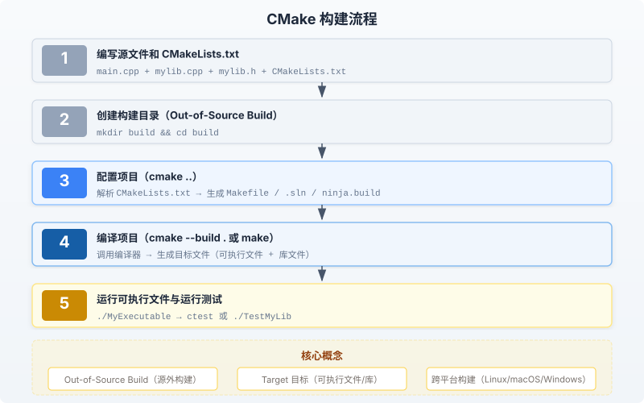

CMake実践練習
この記事では、CMakeを使用して中程度の複雑さのC++プロジェクトを管理する方法を、プロジェクトの作成からコンパイル・実行までの完全なフローで説明します。
内容は、基本設定、ライブラリのリンク、ユニットテスト、カスタムコマンド、クロスプラットフォームのクロスコンパイルなどの高度な機能を網羅しています。
CMakeビルドプロセス
次の図は、CMakeがソースコードから最終的な実行ファイルまでの完全なビルドプロセスを示しています：

プロジェクト概要
メインプログラム、静的ライブラリ、ユニットテストを含むC++プロジェクトを構築します。
ライブラリは数学演算機能（加算、減算、乗算）を提供し、メインプログラムがこれらの機能を呼び出し、テストコードがその正確性を検証します。
プロジェクトのディレクトリ構造
MyProject/
├── CMakeLists.txt # 根构建配置（项目定义、全局设置）
├── src/
│ ├── main.cpp # 主程序入口
│ ├── CMakeLists.txt # src 子目录构建配置（库 + 可执行文件）
│ ├── lib/
│ │ ├── module1.cpp # 数学模块一：加法、减法
│ │ └── module2.cpp # 数学模块二：乘法
│ └── include/
│ └── mylib.h # 公共头文件（函数声明）
└── tests/
├── test_main.cpp # 单元测试用例
└── CMakeLists.txt # 测试子目录构建配置
Out-of-Source Build（ソース外ビルド）これはCMakeのベストプラクティスです。すべてのビルド成果物（Makefile、オブジェクトファイル、実行ファイル）は独立したbuildディレクトリに配置され、ソースディレクトリを汚染しません。
CMakeLists.txtファイルの作成
CMakeLists.txtはCMakeの中核となる設定ファイルで、階層構造を採用しており、ルートディレクトリと各サブディレクトリに1つずつ配置されます。
ルートディレクトリのCMakeLists.txt
ルート設定はプロジェクトレベルの情報を定義し、add_subdirectoryを使用してサブディレクトリを管理します。
例
project(MyProject VERSION 1.0) # プロジェクト名とバージョン番号を定義
# C++標準をC++11に設定し、必須要件にする
set(CMAKE_CXX_STANDARD 11)
set(CMAKE_CXX_STANDARD_REQUIRED ON)
# グローバルヘッダーファイル検索パスを追加（PROJECT_SOURCE_DIRはプロジェクトのルートディレクトリ）
include_directories(${PROJECT_SOURCE_DIR}/src/include)
# サブディレクトリを追加。CMakeがその中のCMakeLists.txtを順に処理する
add_subdirectory(src) # ライブラリと実行ファイルを処理
add_subdirectory(tests) # テストを処理
srcディレクトリのCMakeLists.txt
このファイルはライブラリターゲット（MyLib）と実行ファイルターゲット（MyExecutable）を定義し、依存関係を確立します。
例
add_library(MyLib STATIC
lib/module1.cpp
lib/module2.cpp
)
# MyLibに公開ヘッダーファイルのパスを指定（PUBLICは利用者もこのパスを継承することを示す）
target_include_directories(MyLib PUBLIC ${CMAKE_SOURCE_DIR}/src/include)
# 実行ファイルターゲットMyExecutableを作成
add_executable(MyExecutable main.cpp)
# MyLibを実行ファイルにリンク（PRIVATEはMyExecutableのみが必要であることを示す）
target_link_libraries(MyExecutable PRIVATE MyLib)
PRIVATEとPUBLICの違い：PRIVATE依存関係が現在のターゲットのみで必要であることを示し、PUBLIC依存関係が現在のターゲットをリンクする他のターゲットにも伝達されることを示します。
testsディレクトリのCMakeLists.txt
テスト設定ではGoogle Testフレームワークを使用します。最初にGTestパッケージを検索して導入する必要があります。
例
# MyExecutableのビルド完了後にメッセージを出力
add_custom_command(
TARGET MyExecutable
POST_BUILD # ビルド完了後に実行
COMMAND ${CMAKE_COMMAND} -E echo "MyExecutableのビルドが完了しました！"
COMMENT "ビルド完了メッセージを出力"
)
カスタムターゲット（add_custom_target）
カスタムターゲットは独立したターゲットで、出力ファイルを生成せず、特定のタスクを実行するために使用されます。
例
# runターゲットを作成し、コンパイル後のプログラムを実行
add_custom_target(run
COMMAND ${CMAKE_BINARY_DIR}/src/MyExecutable
DEPENDS MyExecutable # MyExecutableに依存し、先にコンパイルされることを保証
COMMENT "MyExecutableを実行"
)
カスタムターゲットの実行：
# 在 build 目录下执行 make run # 或 cmake --build . --target run
カスタムコマンドとカスタムターゲットの違い：add_custom_command特定のターゲットに付随し、ターゲットのビルドの特定の段階でトリガーされます；add_custom_target独立したターゲットであり、明示的に指定しないと実行されません。
クロスプラットフォームとクロスコンパイル
CMakeの中心的な利点の1つはクロスプラットフォーム対応であり、ターゲットプラットフォームとアーキテクチャを簡単に切り替えることができます。
ターゲットプラットフォームの指定
CMAKE_SYSTEM_NAME変数を使用してターゲットプラットフォームを指定できます。
# 为 Linux 平台交叉编译 cmake -DCMAKE_SYSTEM_NAME=Linux .. # 为 Windows 平台交叉编译 cmake -DCMAKE_SYSTEM_NAME=Windows ..
ツールチェーンファイルの使用
複雑なクロスコンパイルのシナリオでは、ツールチェーンファイルを使用してすべてのプラットフォーム関連設定を一元管理することをお勧めします。
まず、ツールチェーンファイル toolchain.cmake を作成します：
例
# ARM Linuxクロスコンパイルツールチェーン設定
# ターゲットシステムを指定
set(CMAKE_SYSTEM_NAME Linux)
set(CMAKE_SYSTEM_PROCESSOR arm)
# クロスコンパイラのパスを指定（実際の環境に応じて調整）
set(CMAKE_C_COMPILER arm-linux-gnueabihf-gcc)
set(CMAKE_CXX_COMPILER arm-linux-gnueabihf-g++)
# ターゲットシステムのルートファイルシステムのパスを指定（オプション。ライブラリとヘッダーファイルの検索に使用）
set(CMAKE_FIND_ROOT_PATH /path/to/arm/sysroot)
# ターゲットのsysroot内でのみプログラムを検索（ホストシステムでは検索しない）
set(CMAKE_FIND_ROOT_PATH_MODE_PROGRAM NEVER)
# ターゲットのsysroot内でのみライブラリファイルを検索
set(CMAKE_FIND_ROOT_PATH_MODE_LIBRARY ONLY)
# ターゲットのsysroot内でのみヘッダーファイルを検索
set(CMAKE_FIND_ROOT_PATH_MODE_INCLUDE ONLY)
ツールチェーンファイルを使用したビルド：
# 在 build 目录下执行 cmake -DCMAKE_TOOLCHAIN_FILE=../toolchain.cmake .. cmake --build .
ツールチェーンファイルがプラットフォーム関連のコンパイラ、リンカ、ライブラリパスなどの設定を一元管理するため、ターゲットプラットフォームの切り替えは異なるツールチェーンファイルを指定するだけでよく、CMakeLists.txtを変更する必要はありません。
ビルドタイプと一般的なオプション
CMakeは複数のビルドタイプをサポートしており、CMAKE_BUILD_TYPE変数で制御します。
| ビルドタイプ | コンパイルオプション | 適用シナリオ |
|---|---|---|
| Debug | -g（デバッグシンボル） | 開発・デバッグ段階。ブレークポイントと変数の確認が必要 |
| Release | -O2 -DNDEBUG（最適化 + アサーション除去） | 本番リリース。実行速度を重視 |
| RelWithDebInfo | -O2 -g（最適化 + デバッグシンボル） | パフォーマンス分析やデバッグ最適化が必要なリリース版 |
| MinSizeRel | -Os（サイズ最適化） | 組み込みやサイズに敏感なシナリオ |
ビルドタイプの指定：
# Debug 构建 cmake -DCMAKE_BUILD_TYPE=Debug .. # Release 构建 cmake -DCMAKE_BUILD_TYPE=Release ..その他の拡張